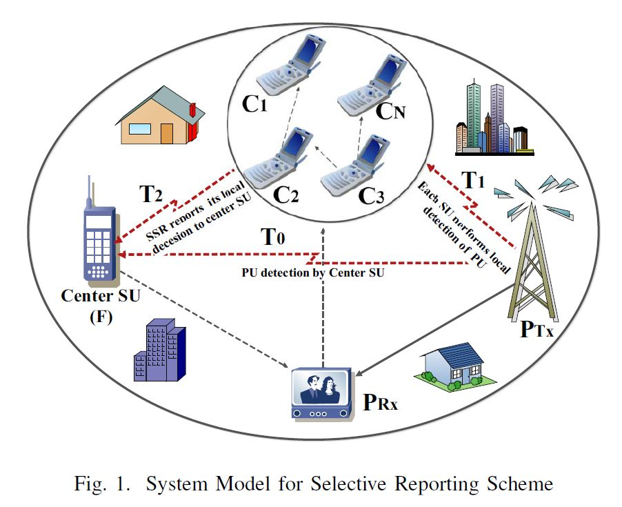
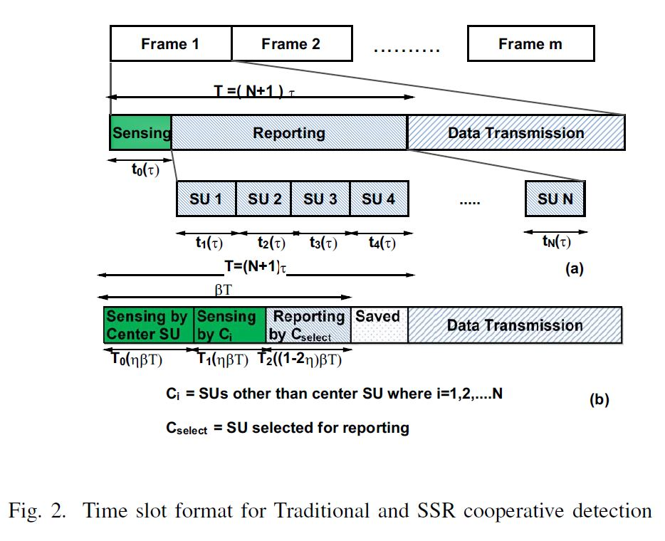

A cognitive radio is a radio that can be programmed and configured dynamically to use the best wireless channels in its vicinity to avoid user interference and congestion. Such a radio automatically detects available channels in wireless spectrum, then accordingly changes its transmission or reception parameters to allow more concurrent wireless communications in a given spectrum band at one location. This project's aim was to develop a mechanism to improve the performance of Cognitive radios. Superior Selective Reporting (SSR) is a hybrid of cooperative spectrum sensing and local sensing. Simulation outcomes proved that SSR increases detection probability of primary user transmission by 35% and mitigates interference to primary users.
Supervisor: Miss Rajalekshmi Kishore at BITS Pilani, India
Duration: 6 months
Link: IEEE Explore Publication
PROCESS
LITERATURE REVIEW
Cognitive radio networking coupled with spectrum sensing technology enables unlicensed secondary users (SUs) to opportunistically access the licensed spectrum of primary users (PUs). Cooperative spectrum sensing significantly improves the detection probability of primary user transmission. Nevertheless, current cooperative sensing techniques render shortcomings including energy consumption and overhead in sensing phase. Overheads are a consequence of multiple cooperative SUs reporting their decision to the fusion center.
COMPETITIVE ANALYSIS
After reviewing research papers, I brainstormed ideas in collaboration with my supervisor. We came up with a hybrid scheme of cooperative spectrum sensing and local sensing which gives higher detection probability, lower missed detection rate and lesser detection overhead as opposed to the traditional cooperative sensing methods
 PROGRAMMING
I implemented a new scheme, Superior Selective Reporting, and test its effectiveness. Plots from simulations in MATLAB gave encouraging results. Furthermore, I explored Bayesian detector in place of previously used energy detector method for spectrum sensing.
WRITING PUBLICATION
I contributed to writing and reviewing the research article which was presented at the IEEE International Conference on Wireless Communications, Signal Processing and Networking 2016 in Chennai, India.